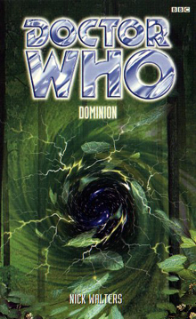

|
Dominion
|
BASIC PLOT DOCTOR COMPANIONS MATERIALISATION CIRCUIT Pg 247 In the Dominion. Pg 260 Back in Sweden, in the TCW room in the C19 base. Pg 277 It drops Kerstin off in Strangnas, then heads off to drop the T'hiili somewhere before going off to San Francisco. PREPARATORY READING CONTINUITY REFERENCES Pg 11 "He splayed his fingers and ran them through his hair. It was still short, a painful reminder of the events of the last two years: the Revolution Man. Om-Tsor. Leaving the TARDIS with Maddie. Being brainwashed - brainwashed! - into working for the Chinese Army." A better summary of Revolution Man we have yet to come across. "It was like a bell, sounding from deep underwater." The Cloister Bell, star of stage and screen. Pg 12 "The Doctor was standing on the console, arms wrapped around the glass column in the middle." Not unlike The Mind Robber. Pg 13 "Fitz! My shoes! Get my shoes!" The Telemovie. Pg 15 Another reference to Fitz's two years away from the TARDIS in Revolution Man. Pg 16 "From what you describe it could be anything - vortex infarction, time scoop." The Quantum Archangel, The Five Doctors. Pg 35 Fitz suggests that he and the Doctor steal a car: "No, we couldn't. Stealing would only land us in trouble with the police." Despite the fact that the Doctor stole a motorbike just one book ago in Revolution Man. Really, he did. This suggests that the Doctor finds nothing wrong with stealing per se, but has issues with getting caught doing it. "Fitz half suspected that the Doctor's pockets had TARDIS-like attributes." Recently confirmed in The Runaway Bride. Pg 42 Reference to UNIT. Pg 44 "'That's my UNIT pass - the picture on it is a bit out of date, I'm afaid.' The picture was of a completely different person - a dignified-looking man with a shock of white hair." The Third Doctor, and we've seen this pass before in Battlefield. "You need to contact Brigadier Winifred Bambera in Geneva, or her replacement." Bambera was also from Battlefield. Pg 45 "'The Doctor's story checks out. There is an outfit called UNIT, and they do have a scientific adviser called the Doctor.' He handed the pass back to Nordenstam, then left the room. Nordenstam slid the pass towards the Doctor. 'How do you explain this photograph?'" You'd think UNIT might have added the tiny but vitally important piece of information on the end of their recommendation, wouldn't you? You know, the bit that goes: 'Oh, and he changes his face quite a lot.' Pg 46 "'Chupacabra?'" Mentioned in an X-Files episode. Actually, the first 100 pages of this book owe a lot of their style to the popularity of the X-Files at the time of writing. Pg 47 "If he'd never argued with Sam." Revolution Man. Pg 53 "The Doctor leaned over the side of a pen to look at the pigs, his face alive with interest. 'Of course they do.' To Bjorn's incredulity, he began making little piggy 'oink-oink' noises." And the Doctor once again contrives to come over as a nutter. Did he learn nothing from Snakedance? Pg 54 "Whatever was going on was creating ripples like a stone being thrown into a still, silent pond." Someone's been chatting to that guy in the cafe in Remembrance of the Daleks. "I get flashes, insights into people's lives." From the Telemovie and thenceforth. Pg 63 "'I've studied under Hippocrates himself,' said the Doctor." Really? He's never mentioned that before. The last piece of medical training the Doctor claims to have had was under Lister, and he mentioned that in The Moonbase. Pg 66 "The product of a particularly nasty corporation, it was meant for surreptitiously taking blood samples from potential plague victims on human colony planets in the thirtieth century." This may be related to the plague of Death to the Daleks. The Corporation may be Spinward, from Deceit, but that might be taking Occam's Razor a little too far. Pg 67 The TARDIS's basic shape is: "a light-grey cube, three metres along each side." Just like the SIDRATs and TARDISes in The War Games. Pg 71 "He remembered Maddie, the last girl he'd been involved with, back in the late sixties. They'd had something, for a while. He briefly wondered what she was doing now, if she was even alive. Perhaps the Doctor would know." Revolution Man. If the Doctor knows that she dies a few years after the main events of that book - as we do - he clearly hasn't told Fitz. "Fitz opened his mouth to agree, thinking of his mother, how he still hadn't got used to losing her." The Taint. Pg 81 "He was reminded of the looks on the faces of Charles Roley's test patients back home in London in 1963." The Taint. Pg 101 "After two years apart, they'd ended up arguing." Yeah, kind of (see Continuity Cock-Ups). Revolution Man. Pg 103 "Here and there were scattered some of the things from her room - books, pages torn; CDs, strewn like forgotten Frisbees; the sheets from her bed and even the bed itself. The chessboard." This latter was the basis of the game being played at the end of Revolution Man. Remarkable: a piece of consistent continuity between two contiguous books. Pg 104 Reference to Daleks. "She picked up a black pebble and tossed it into the pink mass. It vanished soundlessly, with no telltale hiss. So it wasn't some sort of burning, corrosive acid, then." Reminiscent of The Keys of Marinus. Pg 106 "Fitz remembered Sam telling him that there was a spare key above the P in the POLICE BOX sign." The Telemovie. Pg 107 "Some sort of tranquiliser. His body was working overtime to get rid of it." See also Beltempest, when the Doctor gets tranquillised. With hilarious consequences. Unless you happened to die as a result, of course. Pg 108 "His respiratory bypass system was contracting, as it often did in times of stress, or when it thought he was going to be knocked out." This retcon is one of the most brilliant we have ever seen. It single-handedly explains every moment when the Doctor has been knocked out without recourse to said system. As someone might have said: Fantastic! Pg 111 "Perhaps this was one of those crazy places where the ugly things were good and the cute things were evil." Galaxy 4 and Beep the Meep. Pg 115 "Mysterious things would start happening - aliens emerging from the sewers or people being transformed into the slaves of some despotic computer." The Invasion and The Green Death. "Back in the 1970s, when Earth had seemed to come under attack from an alien or home-grown menace every other week." The Invasion through to Robot. Pg 117 "The man in here is the eighth incarnation of the Doctor. I myself have also encountered the seventh." An unrecorded adventure. Pg 118 "The Ogri, for a start." The Stones of Blood. Pg 130 "'Ah.' C19. The part of the British government that funded the UK arm of UNIT. In return, they took possession of all the alien technology that UNIT left behind. And they did dangerous, unethical things with it." C19 was first mentioned in Time-Flight. They are important in a number of Gary Russell books including The Scales of Injustice and Business Unusual. Their appearance here clearly links MA/NA continuity to that of the BBC books. Pg 131 "Well, this had better be the tastiest, most fantastic omelette ever cooked for me to even consider thinking about the mere possibility of condoning your actions." This smacks of one of the more famous lines from the early scenes of The Hitch-Hikers' Guide to the Galaxy. "She entered a code on the keypad to the left of the door with deft fingers, not too deft for the Doctor to be unable to note down the code." He did something very similar in Pg 132 "'Very pretty,' he said. 'But what's it for?'" Similar to by far the best bit in The Pirate Planet.
Pg 133 "Don't you see what this means? Instant transportation of anything! Space exploration would be a cinch - it would make the Mars landings look like a trip to the drugstore. And we could also use it to send supplies to impoverished areas." The Mars landings refers to The Ambassadors of Death, while the rest of this sounds like what TravelMat would eventually be used for in The Seeds of Death.
"Sam Jones stared into the abyss, and the abyss stared back into her." The tagline of the NAs, reminding us of what we've lost. It's also kind of quoted by Rose in The Parting of the Ways.
Pg 134 "[Sam] kept quiet because she didn't want to die screaming." Which is odd, because we all want her to die screaming.
Pg 142 "Fitz recalled the time after his mother's death. For a while, humour had seemed meaningless, and people, with their quirks and mannerisms that he could usually feel so superior to, were just annoying - a noise to be shut out." Seems like a fair description of Demontage to me.
Pg 153 "Sam's philosophy had always been, if there's life, there's hope." Planet of the Spiders. Interference part II.
Pg 162 "The Doctor stood up, a look of amazement on his face, and then to Fitz's considerable surprise he bounded over, grabbed his head and planted a kiss squarely on his lips." Oh, so that's what he was doing in the Telemovie. And there were all were thinking he just wanted to shag Grace Holloway.
Pg 168 "If he'd cracked her skull, caused a brain haemorrhage..." She'll be writing books under the pseudonym of Paul Leonard for the rest of her life. OK, that's harsh, even for us.
"He remembered the last thing Sam had said to him. He's a hero and he never, never, never does anything wrong." Revolution Man. For all his other faults, given the connections in Genocide to the previous books and Revolution Man to the subsequent ones, Paul Leonard seems to be very good at keeping in touch with his fellow authors.
Pg 170 "There had been Ed Hill, of course." Revolution Man.
Pg 171 "She remembered Janus Prime, with its strange glowing sands, and the radiation that had almost claimed her life." The Janus Conjunction.
Pg 173 "In the desert in Kebiria. In the Welsh valleys. Fighting monsters." Dancing the Code and The Green Death.
Pg 184 "Anything not human, for Rassilon's sake." Ah, the Swearing of Rassilon, an ancient Time Lord defence mechanism.
Pg 193 "Wolstencroft remembered the first Auton invasion." Spearhead from Space.
Pg 194 "People die when you're around, Doctor." Not unlike Zbigniev's 'When the Doctor is around, all hell breaks loose' in Battlefield.
"Where was he? London? China? The TARDIS? Sweden?" The Taint and/or Revolution Man.
Pg 206 "Soul-catching. I joined minds with the T'hiili." As he did in The Devil Goblins of Neptune and The Taint.
Pg 210 "The Doctor used the unconscious soldier's radio to report a false alarm, doing a very passable impression of his voice." Something that we've known the Doctor could do all the way back to The Celestial Toymaker.
Pg 213 The chapter title is "The Firemaker", title of the final episode of An Unearthly Child.
Pg 216 "She was cold. Cold as a Cyber-tomb." As in The Tomb of the Cybermen, one presumes.
Pg 217 "A single word flickered in her mind. Fear." Something else that was discussed in An Unearthly Child. The whole chapter seems to be thematically related to said opening story, but this may be a coincidence.
Pg 223 The chapter title is "Time and Ruptured Dimensions In Space." Hang on. That sounds familiar. Could it be an acronym?
Pg 226 "And on the floor beside that, a complicated-looking model train set." From the Blum short story, 'Model Train Set' in Short Trips, and first mentioned in Love and War.
Pg 249 "His hair was still very short." Fitz, after the events of Revolution Man.
Pg 250 "Sam smiled back. Hadn't they argued?" Revolution Man.
Pg 251 "'How could a wormhole invade the TARDIS?' she asked. 'I mean, I thought she was - well, impregnable.' 'She usually is,' said the Doctor. 'And I don't know how.' He straightened up, hands on hips, frowning at the console. 'Almost as if she wanted it to happen.'" Is this ever explained?
Pg 256 "Our universe takes its energy from pocket universes, drawing the energy through black holes or Charged Vacuum Emboitements." Logopolis.
Pg 257 "Not even the Guardians have that power." The Ribos Operation and The Armageddon Factor.
Pg 260 "EARTH SCANDINAVIA HUMANIAN ERA 1999 AD" Consistent with the Telemovie.
Pg 275 "It showed a map of America. As she watched, it zoomed in to the west coast - California." This is the run-in to the events of Unnatural History...
"Sam looked. The blue glow was directly over San Francisco. 'Where you regenerated?'" ... Which will deal with some of the consequences of the Telemovie.
Pg 276 Reference to Maddie from Revolution Man.
OLD FRIENDS AND OLD ENEMIES NEW FRIENDS AND NEW ENEMIES Major Wolstencraft, Private Scholfield.
Inspector Bengt Nordenstam. Officer Karl Hansson.
Itharquell, the T'hiili Queen and a collection of surviving T'vorha.
CONTINUITY COCK-UPS PLUGGING THE HOLES [Fan-wank theorizing of how to fix continuity cock-ups] FEATURED ALIEN RACES FEATURED LOCATIONS The Dominion, resembling an underground location, but actually an entire pocket universe in its own right. By the end of the novel, it has been destroyed.
IN SUMMARY - Anthony Wilson |
|
 |